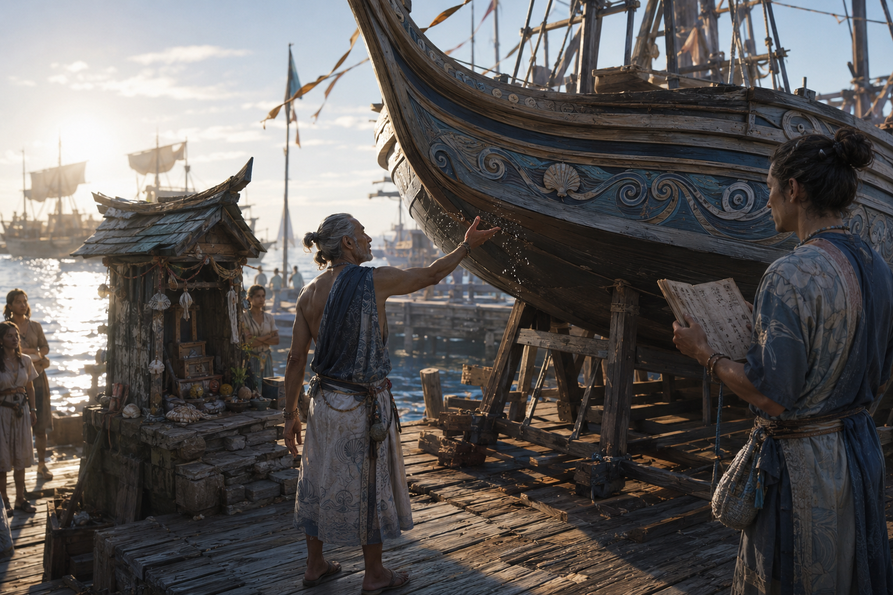

Dictionary / 第二部 — 民族・文化
タラッサ人
（たらっさじん） 固有名詞・民族

タラッサ人の都市 — 夏と冬の船団が集う浮港

タラッサ人の信仰 — 船出前の祝福儀式

タラッサ人の衣装設定 — 航海士カエル・レアンとリマ・シェラ
赤道東洋大陸の海洋民族。アウトリガー技術から始まった造船技術が竜骨の発見へと発展し、大洋航行を可能にした。公共財への過小投資という失政パターンを持つ。建物を動かせる建築文化を持ち、衣装も「固定しない」設計。世界をタル・オッサ（海に挟まれた骨）と呼ぶ。
関連項目